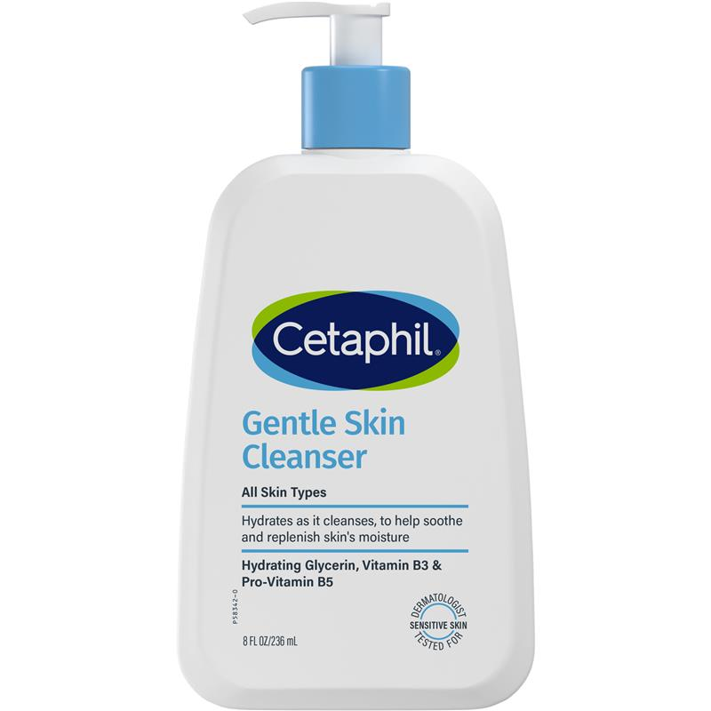

Ingredient Analysis (10 ingredients)
Possibly problematic
Fatty alcohol (C16-C18 mix). Not a direct Malassezia food, but Dobler et al study showed some growth with cetylstearyl alcohol. Use with caution.
Safe
Cyclic organic compound (furanone derivative) used as a humectant. Not a lipid or fatty acid. Safe for Malassezia-prone skin.
Safe
Polysaccharide thickener derived from fermentation. Not a lipid that feeds Malassezia.
Safe
Gentle anionic surfactant from coconut. Rinse-off cleansing agent. Safe for Malassezia.